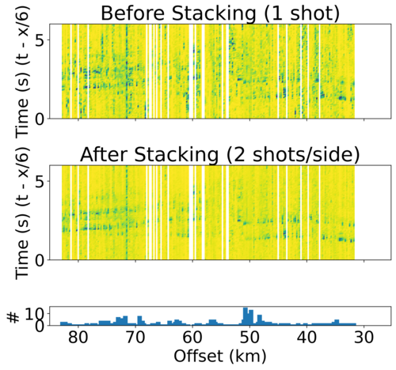
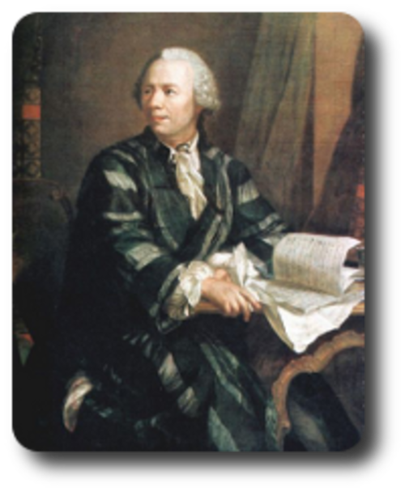
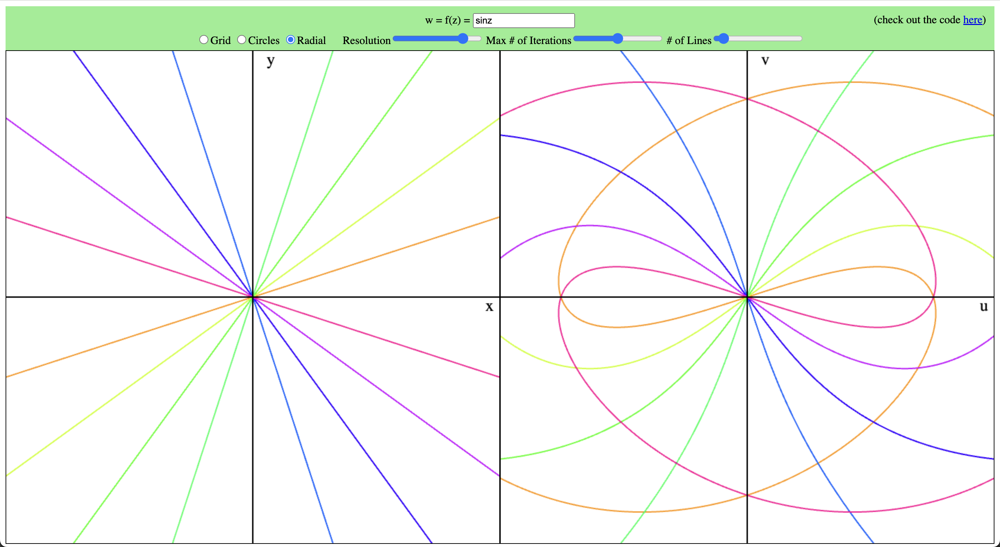

Home
Portfolio
Seismic Detection of Surface Mass Movements
Spring 2024–Present
Built (w/ Prof. Grace Barcheck at Cornell) a deep learning model to detect and classify seismic signals generated by surface mass movements (landslides, rockfalls, avalanches, etc.). We applied our model to 24 years of data at Mt. St. Helens and built a new surface event catalog with more than one million detections.
Geodetic Earthquake Locations
Summer 2024
Worked for Dr. Bill Barnhart at the USGS to develop modern versions of the codes that are used to build the gCent (geodetic centroid) earthquake catalog. I converted the codes from Matlab to Python, implemented a new adaptive meshing algorithm for interferograms, and improved overall performance by >10x.Shore-Crossing Tomography
Summer 2023
Worked with Prof. Lindsay Worthington at UNM to model seismic velocities offshore Kodiak Island, Alaska using airgun shots recorded on a nodal array.

Complex Mappings Visualizer
Fall 2023
Simple tool to visualize ℂ → ℂ mappings. Try it out here (works best in Chrome). See here for Prof. Steven Strogatz's tweets with example usage.